%matplotlib inline
from preamble import *Chapter 4 - Representing Data Feature Engineering
Representing Data and Engineering Features
Categorical Variables
\[\begin{align*} \end{align*}\]
One-Hot-Encoding (Dummy variables)
import os
# The file has no headers naming the columns, so we pass header=None
# and provide the column names explicitly in "names"
adult_path = os.path.join(mglearn.datasets.DATA_PATH, "adult.data")
data = pd.read_csv(
adult_path, header=None, index_col=False,
names=['age', 'workclass', 'fnlwgt', 'education', 'education-num',
'marital-status', 'occupation', 'relationship', 'race', 'gender',
'capital-gain', 'capital-loss', 'hours-per-week', 'native-country',
'income'])
# For illustration purposes, we only select some of the columns
data = data[['age', 'workclass', 'education', 'gender', 'hours-per-week',
'occupation', 'income']]
# IPython.display allows nice output formatting within the Jupyter notebook
display(data.head())| age | workclass | education | gender | hours-per-week | occupation | income | |
|---|---|---|---|---|---|---|---|
| 0 | 39 | State-gov | Bachelors | Male | 40 | Adm-clerical | <=50K |
| 1 | 50 | Self-emp-not-inc | Bachelors | Male | 13 | Exec-managerial | <=50K |
| 2 | 38 | Private | HS-grad | Male | 40 | Handlers-cleaners | <=50K |
| 3 | 53 | Private | 11th | Male | 40 | Handlers-cleaners | <=50K |
| 4 | 28 | Private | Bachelors | Female | 40 | Prof-specialty | <=50K |
Checking string-encoded categorical data
print(data.gender.value_counts()) Male 21790
Female 10771
Name: gender, dtype: int64print("Original features:\n", list(data.columns), "\n")
data_dummies = pd.get_dummies(data)
print("Features after get_dummies:\n", list(data_dummies.columns))Original features:
['age', 'workclass', 'education', 'gender', 'hours-per-week', 'occupation', 'income']
Features after get_dummies:
['age', 'hours-per-week', 'workclass_ ?', 'workclass_ Federal-gov', 'workclass_ Local-gov', 'workclass_ Never-worked', 'workclass_ Private', 'workclass_ Self-emp-inc', 'workclass_ Self-emp-not-inc', 'workclass_ State-gov', 'workclass_ Without-pay', 'education_ 10th', 'education_ 11th', 'education_ 12th', 'education_ 1st-4th', 'education_ 5th-6th', 'education_ 7th-8th', 'education_ 9th', 'education_ Assoc-acdm', 'education_ Assoc-voc', 'education_ Bachelors', 'education_ Doctorate', 'education_ HS-grad', 'education_ Masters', 'education_ Preschool', 'education_ Prof-school', 'education_ Some-college', 'gender_ Female', 'gender_ Male', 'occupation_ ?', 'occupation_ Adm-clerical', 'occupation_ Armed-Forces', 'occupation_ Craft-repair', 'occupation_ Exec-managerial', 'occupation_ Farming-fishing', 'occupation_ Handlers-cleaners', 'occupation_ Machine-op-inspct', 'occupation_ Other-service', 'occupation_ Priv-house-serv', 'occupation_ Prof-specialty', 'occupation_ Protective-serv', 'occupation_ Sales', 'occupation_ Tech-support', 'occupation_ Transport-moving', 'income_ <=50K', 'income_ >50K']display(data_dummies.head())| age | hours-per-week | workclass_ ? | workclass_ Federal-gov | ... | occupation_ Tech-support | occupation_ Transport-moving | income_ <=50K | income_ >50K | |
|---|---|---|---|---|---|---|---|---|---|
| 0 | 39 | 40 | 0 | 0 | ... | 0 | 0 | 1 | 0 |
| 1 | 50 | 13 | 0 | 0 | ... | 0 | 0 | 1 | 0 |
| 2 | 38 | 40 | 0 | 0 | ... | 0 | 0 | 1 | 0 |
| 3 | 53 | 40 | 0 | 0 | ... | 0 | 0 | 1 | 0 |
| 4 | 28 | 40 | 0 | 0 | ... | 0 | 0 | 1 | 0 |
5 rows × 46 columns
features = data_dummies.loc[:, 'age':'occupation_ Transport-moving']
# Extract NumPy arrays
X = features.values
y = data_dummies['income_ >50K'].values
print("X.shape: {} y.shape: {}".format(X.shape, y.shape))X.shape: (32561, 44) y.shape: (32561,)from sklearn.linear_model import LogisticRegression
from sklearn.model_selection import train_test_split
X_train, X_test, y_train, y_test = train_test_split(X, y, random_state=0)
logreg = LogisticRegression()
logreg.fit(X_train, y_train)
print("Test score: {:.2f}".format(logreg.score(X_test, y_test)))Test score: 0.81Numbers Can Encode Categoricals
# create a DataFrame with an integer feature and a categorical string feature
demo_df = pd.DataFrame({'Integer Feature': [0, 1, 2, 1],
'Categorical Feature': ['socks', 'fox', 'socks', 'box']})
display(demo_df)| Integer Feature | Categorical Feature | |
|---|---|---|
| 0 | 0 | socks |
| 1 | 1 | fox |
| 2 | 2 | socks |
| 3 | 1 | box |
display(pd.get_dummies(demo_df))| Integer Feature | Categorical Feature_box | Categorical Feature_fox | Categorical Feature_socks | |
|---|---|---|---|---|
| 0 | 0 | 0 | 0 | 1 |
| 1 | 1 | 0 | 1 | 0 |
| 2 | 2 | 0 | 0 | 1 |
| 3 | 1 | 1 | 0 | 0 |
demo_df['Integer Feature'] = demo_df['Integer Feature'].astype(str)
display(pd.get_dummies(demo_df, columns=['Integer Feature', 'Categorical Feature']))| Integer Feature_0 | Integer Feature_1 | Integer Feature_2 | Categorical Feature_box | Categorical Feature_fox | Categorical Feature_socks | |
|---|---|---|---|---|---|---|
| 0 | 1 | 0 | 0 | 0 | 0 | 1 |
| 1 | 0 | 1 | 0 | 0 | 1 | 0 |
| 2 | 0 | 0 | 1 | 0 | 0 | 1 |
| 3 | 0 | 1 | 0 | 1 | 0 | 0 |
OneHotEncoder and ColumnTransformer: Categorical Variables with scikit-learn
from sklearn.preprocessing import OneHotEncoder
# Setting sparse=False means OneHotEncode will return a numpy array, not a sparse matrix
ohe = OneHotEncoder(sparse=False)
print(ohe.fit_transform(demo_df))[[1. 0. 0. 0. 0. 1.]
[0. 1. 0. 0. 1. 0.]
[0. 0. 1. 0. 0. 1.]
[0. 1. 0. 1. 0. 0.]]print(ohe.get_feature_names())['x0_0' 'x0_1' 'x0_2' 'x1_box' 'x1_fox' 'x1_socks']display(data.head())| age | workclass | education | gender | hours-per-week | occupation | income | |
|---|---|---|---|---|---|---|---|
| 0 | 39 | State-gov | Bachelors | Male | 40 | Adm-clerical | <=50K |
| 1 | 50 | Self-emp-not-inc | Bachelors | Male | 13 | Exec-managerial | <=50K |
| 2 | 38 | Private | HS-grad | Male | 40 | Handlers-cleaners | <=50K |
| 3 | 53 | Private | 11th | Male | 40 | Handlers-cleaners | <=50K |
| 4 | 28 | Private | Bachelors | Female | 40 | Prof-specialty | <=50K |
from sklearn.compose import ColumnTransformer
from sklearn.preprocessing import StandardScaler
ct = ColumnTransformer(
[("scaling", StandardScaler(), ['age', 'hours-per-week']),
("onehot", OneHotEncoder(sparse=False), ['workclass', 'education', 'gender', 'occupation'])])from sklearn.linear_model import LogisticRegression
from sklearn.model_selection import train_test_split
# get all columns apart from income for the features
data_features = data.drop("income", axis=1)
# split dataframe and income
X_train, X_test, y_train, y_test = train_test_split(
data_features, data.income, random_state=0)
ct.fit(X_train)
X_train_trans = ct.transform(X_train)
print(X_train_trans.shape)(24420, 44)logreg = LogisticRegression(max_iter=1000)
logreg.fit(X_train_trans, y_train)
X_test_trans = ct.transform(X_test)
print("Test score: {:.2f}".format(logreg.score(X_test_trans, y_test)))Test score: 0.81ct.named_transformers_.onehotOneHotEncoder(sparse=False)Convenient ColumnTransformer creation with make_columntransformer
from sklearn.compose import make_column_transformer
ct = make_column_transformer(
(['age', 'hours-per-week'], StandardScaler()),
(['workclass', 'education', 'gender', 'occupation'], OneHotEncoder(sparse=False)))Binning, Discretization, Linear Models, and Trees
from sklearn.linear_model import LinearRegression
from sklearn.tree import DecisionTreeRegressor
X, y = mglearn.datasets.make_wave(n_samples=120)
line = np.linspace(-3, 3, 1000, endpoint=False).reshape(-1, 1)
reg = DecisionTreeRegressor(min_samples_leaf=3).fit(X, y)
plt.plot(line, reg.predict(line), label="decision tree")
reg = LinearRegression().fit(X, y)
plt.plot(line, reg.predict(line), label="linear regression")
plt.plot(X[:, 0], y, 'o', c='k')
plt.ylabel("Regression output")
plt.xlabel("Input feature")
plt.legend(loc="best")<matplotlib.legend.Legend at 0x2e3faeeca88>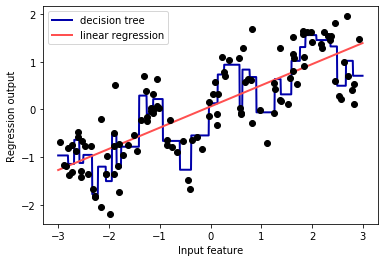
from sklearn.preprocessing import KBinsDiscretizerkb = KBinsDiscretizer(n_bins=10, strategy='uniform')
kb.fit(X)
print("bin edges: \n", kb.bin_edges_)bin edges:
[array([-2.967, -2.378, -1.789, -1.2 , -0.612, -0.023, 0.566, 1.155,
1.744, 2.333, 2.921])]X_binned = kb.transform(X)
X_binned<120x10 sparse matrix of type '<class 'numpy.float64'>'
with 120 stored elements in Compressed Sparse Row format>print(X[:10])
X_binned.toarray()[:10][[-0.753]
[ 2.704]
[ 1.392]
[ 0.592]
[-2.064]
[-2.064]
[-2.651]
[ 2.197]
[ 0.607]
[ 1.248]]array([[0., 0., 0., 1., 0., 0., 0., 0., 0., 0.],
[0., 0., 0., 0., 0., 0., 0., 0., 0., 1.],
[0., 0., 0., 0., 0., 0., 0., 1., 0., 0.],
[0., 0., 0., 0., 0., 0., 1., 0., 0., 0.],
[0., 1., 0., 0., 0., 0., 0., 0., 0., 0.],
[0., 1., 0., 0., 0., 0., 0., 0., 0., 0.],
[1., 0., 0., 0., 0., 0., 0., 0., 0., 0.],
[0., 0., 0., 0., 0., 0., 0., 0., 1., 0.],
[0., 0., 0., 0., 0., 0., 1., 0., 0., 0.],
[0., 0., 0., 0., 0., 0., 0., 1., 0., 0.]])kb = KBinsDiscretizer(n_bins=10, strategy='uniform', encode='onehot-dense')
kb.fit(X)
X_binned = kb.transform(X)line_binned = kb.transform(line)
reg = LinearRegression().fit(X_binned, y)
plt.plot(line, reg.predict(line_binned), label='linear regression binned')
reg = DecisionTreeRegressor(min_samples_split=3).fit(X_binned, y)
plt.plot(line, reg.predict(line_binned), label='decision tree binned')
plt.plot(X[:, 0], y, 'o', c='k')
plt.vlines(kb.bin_edges_[0], -3, 3, linewidth=1, alpha=.2)
plt.legend(loc="best")
plt.ylabel("Regression output")
plt.xlabel("Input feature")Text(0.5, 0, 'Input feature')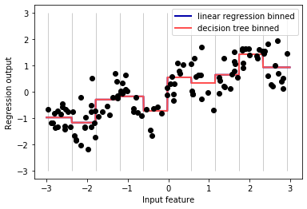
Interactions and Polynomials
X_combined = np.hstack([X, X_binned])
print(X_combined.shape)(120, 11)reg = LinearRegression().fit(X_combined, y)
line_combined = np.hstack([line, line_binned])
plt.plot(line, reg.predict(line_combined), label='linear regression combined')
plt.vlines(kb.bin_edges_[0], -3, 3, linewidth=1, alpha=.2)
plt.legend(loc="best")
plt.ylabel("Regression output")
plt.xlabel("Input feature")
plt.plot(X[:, 0], y, 'o', c='k')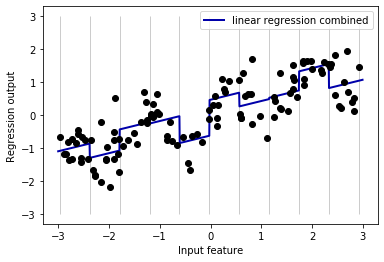
X_product = np.hstack([X_binned, X * X_binned])
print(X_product.shape)(120, 20)reg = LinearRegression().fit(X_product, y)
line_product = np.hstack([line_binned, line * line_binned])
plt.plot(line, reg.predict(line_product), label='linear regression product')
plt.vlines(kb.bin_edges_[0], -3, 3, linewidth=1, alpha=.2)
plt.plot(X[:, 0], y, 'o', c='k')
plt.ylabel("Regression output")
plt.xlabel("Input feature")
plt.legend(loc="best")<matplotlib.legend.Legend at 0x2e3fb436048>from sklearn.preprocessing import PolynomialFeatures
# include polynomials up to x ** 10:
# the default "include_bias=True" adds a feature that's constantly 1
poly = PolynomialFeatures(degree=10, include_bias=False)
poly.fit(X)
X_poly = poly.transform(X)print("X_poly.shape: {}".format(X_poly.shape))X_poly.shape: (120, 10)print("Entries of X:\n{}".format(X[:5]))
print("Entries of X_poly:\n{}".format(X_poly[:5]))Entries of X:
[[-0.753]
[ 2.704]
[ 1.392]
[ 0.592]
[-2.064]]
Entries of X_poly:
[[ -0.753 0.567 -0.427 0.321 -0.242 0.182 -0.137
0.103 -0.078 0.058]
[ 2.704 7.313 19.777 53.482 144.632 391.125 1057.714
2860.36 7735.232 20918.278]
[ 1.392 1.938 2.697 3.754 5.226 7.274 10.125
14.094 19.618 27.307]
[ 0.592 0.35 0.207 0.123 0.073 0.043 0.025
0.015 0.009 0.005]
[ -2.064 4.26 -8.791 18.144 -37.448 77.289 -159.516
329.222 -679.478 1402.367]]print("Polynomial feature names:\n{}".format(poly.get_feature_names()))Polynomial feature names:
['x0', 'x0^2', 'x0^3', 'x0^4', 'x0^5', 'x0^6', 'x0^7', 'x0^8', 'x0^9', 'x0^10']reg = LinearRegression().fit(X_poly, y)
line_poly = poly.transform(line)
plt.plot(line, reg.predict(line_poly), label='polynomial linear regression')
plt.plot(X[:, 0], y, 'o', c='k')
plt.ylabel("Regression output")
plt.xlabel("Input feature")
plt.legend(loc="best")<matplotlib.legend.Legend at 0x2e3fb4b1ac8>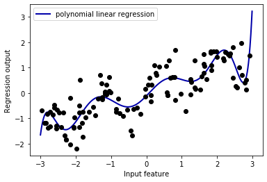
from sklearn.svm import SVR
for gamma in [1, 10]:
svr = SVR(gamma=gamma).fit(X, y)
plt.plot(line, svr.predict(line), label='SVR gamma={}'.format(gamma))
plt.plot(X[:, 0], y, 'o', c='k')
plt.ylabel("Regression output")
plt.xlabel("Input feature")
plt.legend(loc="best")<matplotlib.legend.Legend at 0x2e3fb4f8bc8>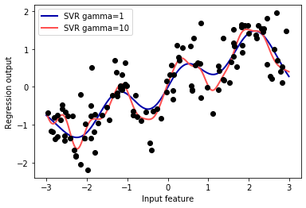
from sklearn.datasets import load_boston
from sklearn.model_selection import train_test_split
from sklearn.preprocessing import MinMaxScaler
boston = load_boston()
X_train, X_test, y_train, y_test = train_test_split(
boston.data, boston.target, random_state=0)
# rescale data
scaler = MinMaxScaler()
X_train_scaled = scaler.fit_transform(X_train)
X_test_scaled = scaler.transform(X_test)poly = PolynomialFeatures(degree=2).fit(X_train_scaled)
X_train_poly = poly.transform(X_train_scaled)
X_test_poly = poly.transform(X_test_scaled)
print("X_train.shape: {}".format(X_train.shape))
print("X_train_poly.shape: {}".format(X_train_poly.shape))X_train.shape: (379, 13)
X_train_poly.shape: (379, 105)print("Polynomial feature names:\n{}".format(poly.get_feature_names()))Polynomial feature names:
['1', 'x0', 'x1', 'x2', 'x3', 'x4', 'x5', 'x6', 'x7', 'x8', 'x9', 'x10', 'x11', 'x12', 'x0^2', 'x0 x1', 'x0 x2', 'x0 x3', 'x0 x4', 'x0 x5', 'x0 x6', 'x0 x7', 'x0 x8', 'x0 x9', 'x0 x10', 'x0 x11', 'x0 x12', 'x1^2', 'x1 x2', 'x1 x3', 'x1 x4', 'x1 x5', 'x1 x6', 'x1 x7', 'x1 x8', 'x1 x9', 'x1 x10', 'x1 x11', 'x1 x12', 'x2^2', 'x2 x3', 'x2 x4', 'x2 x5', 'x2 x6', 'x2 x7', 'x2 x8', 'x2 x9', 'x2 x10', 'x2 x11', 'x2 x12', 'x3^2', 'x3 x4', 'x3 x5', 'x3 x6', 'x3 x7', 'x3 x8', 'x3 x9', 'x3 x10', 'x3 x11', 'x3 x12', 'x4^2', 'x4 x5', 'x4 x6', 'x4 x7', 'x4 x8', 'x4 x9', 'x4 x10', 'x4 x11', 'x4 x12', 'x5^2', 'x5 x6', 'x5 x7', 'x5 x8', 'x5 x9', 'x5 x10', 'x5 x11', 'x5 x12', 'x6^2', 'x6 x7', 'x6 x8', 'x6 x9', 'x6 x10', 'x6 x11', 'x6 x12', 'x7^2', 'x7 x8', 'x7 x9', 'x7 x10', 'x7 x11', 'x7 x12', 'x8^2', 'x8 x9', 'x8 x10', 'x8 x11', 'x8 x12', 'x9^2', 'x9 x10', 'x9 x11', 'x9 x12', 'x10^2', 'x10 x11', 'x10 x12', 'x11^2', 'x11 x12', 'x12^2']from sklearn.linear_model import Ridge
ridge = Ridge().fit(X_train_scaled, y_train)
print("Score without interactions: {:.3f}".format(
ridge.score(X_test_scaled, y_test)))
ridge = Ridge().fit(X_train_poly, y_train)
print("Score with interactions: {:.3f}".format(
ridge.score(X_test_poly, y_test)))Score without interactions: 0.621
Score with interactions: 0.753from sklearn.ensemble import RandomForestRegressor
rf = RandomForestRegressor(n_estimators=100).fit(X_train_scaled, y_train)
print("Score without interactions: {:.3f}".format(
rf.score(X_test_scaled, y_test)))
rf = RandomForestRegressor(n_estimators=100).fit(X_train_poly, y_train)
print("Score with interactions: {:.3f}".format(rf.score(X_test_poly, y_test)))Score without interactions: 0.808
Score with interactions: 0.789Univariate Nonlinear Transformations
rnd = np.random.RandomState(0)
X_org = rnd.normal(size=(1000, 3))
w = rnd.normal(size=3)
X = rnd.poisson(10 * np.exp(X_org))
y = np.dot(X_org, w)print("Number of feature appearances:\n{}".format(np.bincount(X[:, 0])))Number of feature appearances:
[28 38 68 48 61 59 45 56 37 40 35 34 36 26 23 26 27 21 23 23 18 21 10 9
17 9 7 14 12 7 3 8 4 5 5 3 4 2 4 1 1 3 2 5 3 8 2 5
2 1 2 3 3 2 2 3 3 0 1 2 1 0 0 3 1 0 0 0 1 3 0 1
0 2 0 1 1 0 0 0 0 1 0 0 2 2 0 1 1 0 0 0 0 1 1 0
0 0 0 0 0 0 1 0 0 0 0 0 1 1 0 0 1 0 0 0 0 0 0 0
1 0 0 0 0 1 0 0 0 0 0 0 0 0 0 0 0 0 0 0 1]bins = np.bincount(X[:, 0])
plt.bar(range(len(bins)), bins, color='grey')
plt.ylabel("Number of appearances")
plt.xlabel("Value")Text(0.5, 0, 'Value')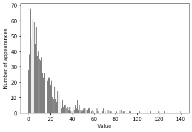
from sklearn.linear_model import Ridge
X_train, X_test, y_train, y_test = train_test_split(X, y, random_state=0)
score = Ridge().fit(X_train, y_train).score(X_test, y_test)
print("Test score: {:.3f}".format(score))Test score: 0.622X_train_log = np.log(X_train + 1)
X_test_log = np.log(X_test + 1)plt.hist(X_train_log[:, 0], bins=25, color='gray')
plt.ylabel("Number of appearances")
plt.xlabel("Value")Text(0.5, 0, 'Value')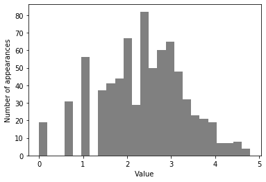
score = Ridge().fit(X_train_log, y_train).score(X_test_log, y_test)
print("Test score: {:.3f}".format(score))Test score: 0.875Automatic Feature Selection
Univariate statistics
from sklearn.datasets import load_breast_cancer
from sklearn.feature_selection import SelectPercentile
from sklearn.model_selection import train_test_split
cancer = load_breast_cancer()
# get deterministic random numbers
rng = np.random.RandomState(42)
noise = rng.normal(size=(len(cancer.data), 50))
# add noise features to the data
# the first 30 features are from the dataset, the next 50 are noise
X_w_noise = np.hstack([cancer.data, noise])
X_train, X_test, y_train, y_test = train_test_split(
X_w_noise, cancer.target, random_state=0, test_size=.5)
# use f_classif (the default) and SelectPercentile to select 50% of features
select = SelectPercentile(percentile=50)
select.fit(X_train, y_train)
# transform training set
X_train_selected = select.transform(X_train)
print("X_train.shape: {}".format(X_train.shape))
print("X_train_selected.shape: {}".format(X_train_selected.shape))X_train.shape: (284, 80)
X_train_selected.shape: (284, 40)mask = select.get_support()
print(mask)
# visualize the mask. black is True, white is False
plt.matshow(mask.reshape(1, -1), cmap='gray_r')
plt.xlabel("Sample index")
plt.yticks(())[ True True True True True True True True True False True False
True True True True True True False False True True True True
True True True True True True False False False True False True
False False True False False False False True False False True False
False True False True False False False False False False True False
True False False False False True False True False False False False
True True False True False False False False]([], <a list of 0 Text yticklabel objects>)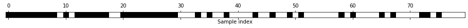
from sklearn.linear_model import LogisticRegression
# transform test data
X_test_selected = select.transform(X_test)
lr = LogisticRegression(max_iter=1000)
lr.fit(X_train, y_train)
print("Score with all features: {:.3f}".format(lr.score(X_test, y_test)))
lr.fit(X_train_selected, y_train)
print("Score with only selected features: {:.3f}".format(
lr.score(X_test_selected, y_test)))Score with all features: 0.940
Score with only selected features: 0.940Model-based Feature Selection
from sklearn.feature_selection import SelectFromModel
from sklearn.ensemble import RandomForestClassifier
select = SelectFromModel(
RandomForestClassifier(n_estimators=100, random_state=42),
threshold="median")select.fit(X_train, y_train)
X_train_l1 = select.transform(X_train)
print("X_train.shape: {}".format(X_train.shape))
print("X_train_l1.shape: {}".format(X_train_l1.shape))X_train.shape: (284, 80)
X_train_l1.shape: (284, 40)mask = select.get_support()
# visualize the mask. black is True, white is False
plt.matshow(mask.reshape(1, -1), cmap='gray_r')
plt.xlabel("Sample index")
plt.yticks(())([], <a list of 0 Text yticklabel objects>)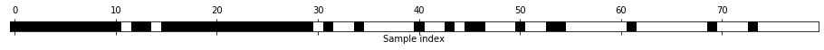
X_test_l1 = select.transform(X_test)
score = LogisticRegression(max_iter=1000).fit(X_train_l1, y_train).score(X_test_l1, y_test)
print("Test score: {:.3f}".format(score))Test score: 0.954Iterative feature selection
from sklearn.feature_selection import RFE
select = RFE(RandomForestClassifier(n_estimators=100, random_state=42),
n_features_to_select=40)
select.fit(X_train, y_train)
# visualize the selected features:
mask = select.get_support()
plt.matshow(mask.reshape(1, -1), cmap='gray_r')
plt.xlabel("Sample index")
plt.yticks(())([], <a list of 0 Text yticklabel objects>)
X_train_rfe = select.transform(X_train)
X_test_rfe = select.transform(X_test)
score = LogisticRegression(max_iter=1000).fit(X_train_rfe, y_train).score(X_test_rfe, y_test)
print("Test score: {:.3f}".format(score))Test score: 0.951print("Test score: {:.3f}".format(select.score(X_test, y_test)))Test score: 0.951Utilizing Expert Knowledge
citibike = mglearn.datasets.load_citibike()print("Citi Bike data:\n{}".format(citibike.head()))Citi Bike data:
starttime
2015-08-01 00:00:00 3
2015-08-01 03:00:00 0
2015-08-01 06:00:00 9
2015-08-01 09:00:00 41
2015-08-01 12:00:00 39
Freq: 3H, Name: one, dtype: int64plt.figure(figsize=(10, 3))
xticks = pd.date_range(start=citibike.index.min(), end=citibike.index.max(),
freq='D')
plt.xticks(xticks, xticks.strftime("%a %m-%d"), rotation=90, ha="left")
plt.plot(citibike, linewidth=1)
plt.xlabel("Date")
plt.ylabel("Rentals")Text(0, 0.5, 'Rentals')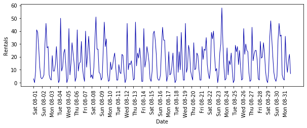
# extract the target values (number of rentals)
y = citibike.values
# convert to POSIX time by dividing by 10**9
X = citibike.index.astype("int64").values.reshape(-1, 1) // 10**9# use the first 184 data points for training, the rest for testing
n_train = 184
# function to evaluate and plot a regressor on a given feature set
def eval_on_features(features, target, regressor):
# split the given features into a training and a test set
X_train, X_test = features[:n_train], features[n_train:]
# also split the target array
y_train, y_test = target[:n_train], target[n_train:]
regressor.fit(X_train, y_train)
print("Test-set R^2: {:.2f}".format(regressor.score(X_test, y_test)))
y_pred = regressor.predict(X_test)
y_pred_train = regressor.predict(X_train)
plt.figure(figsize=(10, 3))
plt.xticks(range(0, len(X), 8), xticks.strftime("%a %m-%d"), rotation=90,
ha="left")
plt.plot(range(n_train), y_train, label="train")
plt.plot(range(n_train, len(y_test) + n_train), y_test, '-', label="test")
plt.plot(range(n_train), y_pred_train, '--', label="prediction train")
plt.plot(range(n_train, len(y_test) + n_train), y_pred, '--',
label="prediction test")
plt.legend(loc=(1.01, 0))
plt.xlabel("Date")
plt.ylabel("Rentals")from sklearn.ensemble import RandomForestRegressor
regressor = RandomForestRegressor(n_estimators=100, random_state=0)
eval_on_features(X, y, regressor)Test-set R^2: -0.04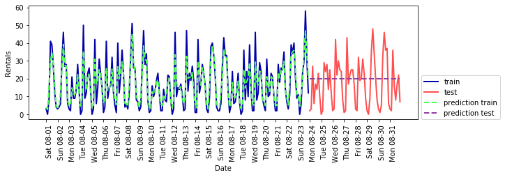
X_hour = citibike.index.hour.values.reshape(-1, 1)
eval_on_features(X_hour, y, regressor)Test-set R^2: 0.60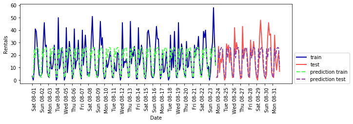
X_hour_week = np.hstack([citibike.index.dayofweek.values.reshape(-1, 1),
citibike.index.hour.values.reshape(-1, 1)])
eval_on_features(X_hour_week, y, regressor)Test-set R^2: 0.84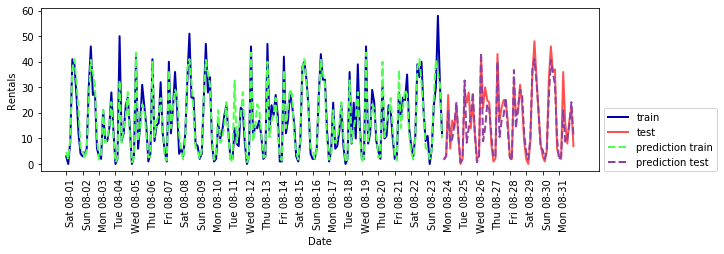
from sklearn.linear_model import LinearRegression
eval_on_features(X_hour_week, y, LinearRegression())Test-set R^2: 0.13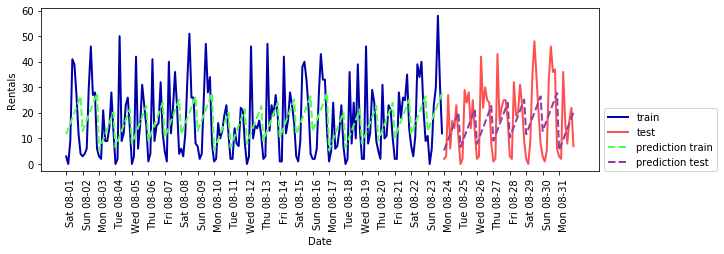
enc = OneHotEncoder()
X_hour_week_onehot = enc.fit_transform(X_hour_week).toarray()eval_on_features(X_hour_week_onehot, y, Ridge())Test-set R^2: 0.62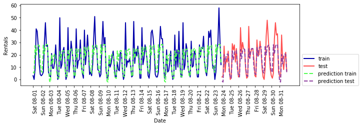
poly_transformer = PolynomialFeatures(degree=2, interaction_only=True,
include_bias=False)
X_hour_week_onehot_poly = poly_transformer.fit_transform(X_hour_week_onehot)
lr = Ridge()
eval_on_features(X_hour_week_onehot_poly, y, lr)Test-set R^2: 0.85
hour = ["%02d:00" % i for i in range(0, 24, 3)]
day = ["Mon", "Tue", "Wed", "Thu", "Fri", "Sat", "Sun"]
features = day + hourfeatures_poly = poly_transformer.get_feature_names(features)
features_nonzero = np.array(features_poly)[lr.coef_ != 0]
coef_nonzero = lr.coef_[lr.coef_ != 0]plt.figure(figsize=(15, 2))
plt.plot(coef_nonzero, 'o')
plt.xticks(np.arange(len(coef_nonzero)), features_nonzero, rotation=90)
plt.xlabel("Feature name")
plt.ylabel("Feature magnitude")Text(0, 0.5, 'Feature magnitude')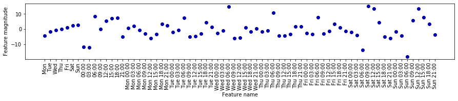